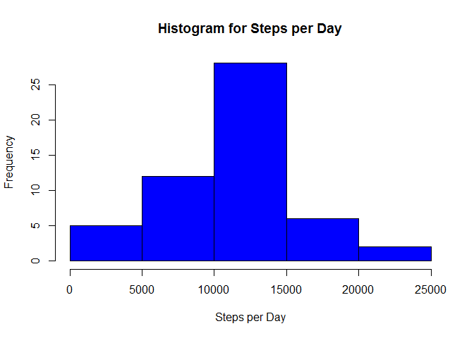

The metadata section of this R markdown file includes the title, author, and options for customizing output. The options define the characteristics for the PA1 template files generated when the RStudio “Knit HTML” button is clicked. The header.html file referenced in the metadata has one line of HTML code; the metadata header command adds this line of code to the header of the generated PA1_template.html file, which in turn forces the “hwriter.css” style sheet to be used; this style sheet enables more flexible formatting for tables generated in R.
Introduction
Peer Assessment 1 involves analysis and visualization of a personal movement activity monitoring data set.
Loading and Preprocessing the Data
First we load the data and convert the date column to POSIXct format. Note that some days, like October 8, 2012, have no recorded readings: all values for the “steps” variable are NA for this date.
## install dplyr, hwriter, histogram, and ggplot2 packages
## cache=TRUE caches this code chunk for later reuse.
suppressMessages(library(dplyr))
u <- read.csv("activity.csv")
## We change from the u$date factor variable to the v$Date POSIXct
## vector. The capitalization of the date variable anticipates
## the variable appearing as a table column header.
v <- transform(u, Date = as.POSIXct(date))
v <- select(v, steps, interval, Date)
head(v)
## steps interval Date
## 1 NA 0 2012-10-01
## 2 NA 5 2012-10-01
## 3 NA 10 2012-10-01
## 4 NA 15 2012-10-01
## 5 NA 20 2012-10-01
## 6 NA 25 2012-10-01
## We illustrate that the number of readings dated 2012-10-08
## is the same as the number of missing values dated 2012-10-08.
length(v[which(v$Date=="2012-10-08"), 1])
## [1] 288
length(v[which(v$Date=="2012-10-08"), 1][] == NA)
## [1] 288
What is mean total number of steps taken per day?
Next, we display the total number of steps taken per day in a table.
## The "asis" option above ensures that the table is rendered
## from the HTML code generated in this code block. The dplyr
## summarize function is used to find the total number of
## steps per day, and we capitalize the variable representing
## the result for the table.
##
## The hwriter package used below adds format options for HTML
## output, especially as needed for tables. To see the code
## for the hwrite function, use hwriter:::showExample. Use
## hwriter::showExample() to see sample output for hwrite.
## The cat command below is needed for the PA1_template.md file
## to include the HTML code generated by the hwrite command (the
## contents of test.html). Without the cat command, the test.html
## file correctly renders the Date/Sum/Mean/Median table, but the
## table is not included in the knit2html output, PA1_template.html,
## of this R markdown file because, in this case, the
## HTML code for the table is not in the PA1_template.md file.
##
## Note that test.html does not call hwriter.css from its header
## because the in_header command applied globally to this Rmd file
## (see top of this document) does not apply to test.html;
## however, the table renders properly in test.html because the
## file is generated by hwrite with the style attribute parameters.
suppressMessages(library(hwriter))
days <- group_by(v, Date)
w <- summarize(days, Steps = sum(steps))
cat(hwrite(w, 'test.html', center=TRUE, row.bgcolor='#ffdc98', row.style=list('font-weight:bold;text-align:center'), col.style=list(Date='text-align:center', Steps='text-align:center', col.width=rep('30px', nrow(w))), width='300px'))
|
Date
|
Steps
|
|
2012-10-01
|
|
|
2012-10-02
|
126
|
|
2012-10-03
|
11352
|
|
2012-10-04
|
12116
|
|
2012-10-05
|
13294
|
|
2012-10-06
|
15420
|
|
2012-10-07
|
11015
|
|
2012-10-08
|
|
|
2012-10-09
|
12811
|
|
2012-10-10
|
9900
|
|
2012-10-11
|
10304
|
|
2012-10-12
|
17382
|
|
2012-10-13
|
12426
|
|
2012-10-14
|
15098
|
|
2012-10-15
|
10139
|
|
2012-10-16
|
15084
|
|
2012-10-17
|
13452
|
|
2012-10-18
|
10056
|
|
2012-10-19
|
11829
|
|
2012-10-20
|
10395
|
|
2012-10-21
|
8821
|
|
2012-10-22
|
13460
|
|
2012-10-23
|
8918
|
|
2012-10-24
|
8355
|
|
2012-10-25
|
2492
|
|
2012-10-26
|
6778
|
|
2012-10-27
|
10119
|
|
2012-10-28
|
11458
|
|
2012-10-29
|
5018
|
|
2012-10-30
|
9819
|
|
2012-10-31
|
15414
|
|
2012-11-01
|
|
|
2012-11-02
|
10600
|
|
2012-11-03
|
10571
|
|
2012-11-04
|
|
|
2012-11-05
|
10439
|
|
2012-11-06
|
8334
|
|
2012-11-07
|
12883
|
|
2012-11-08
|
3219
|
|
2012-11-09
|
|
|
2012-11-10
|
|
|
2012-11-11
|
12608
|
|
2012-11-12
|
10765
|
|
2012-11-13
|
7336
|
|
2012-11-14
|
|
|
2012-11-15
|
41
|
|
2012-11-16
|
5441
|
|
2012-11-17
|
14339
|
|
2012-11-18
|
15110
|
|
2012-11-19
|
8841
|
|
2012-11-20
|
4472
|
|
2012-11-21
|
12787
|
|
2012-11-22
|
20427
|
|
2012-11-23
|
21194
|
|
2012-11-24
|
14478
|
|
2012-11-25
|
11834
|
|
2012-11-26
|
11162
|
|
2012-11-27
|
13646
|
|
2012-11-28
|
10183
|
|
2012-11-29
|
7047
|
|
2012-11-30
|
|
We illustrate the “density” of steps per day with a histogram.
suppressMessages(library(histogram))
hist(w$Steps, col='blue', main="Histogram for Steps per Day", xlab="Steps per Day", ylab="Frequency")

We display in a table the mean number of steps per day and the median number of steps per day.
suppressMessages(library(dplyr))
## We use the dplyr mutate option to calculate Mean and Median per day,
## leaving out missing values in the computations.
x <- mutate(w, Mean=mean(Steps,na.rm=T), Median=median(Steps,na.rm=T))
## We use the dplyr select option to remove the Date and Sum
## columns.
y <- select(x, Mean, Median)
## Since the Mean and Median are the same in each row of y, we focus
## only on the first row.
z <- y[1, ]
## Note the syntax used with the row.style attribute: a semicolon
## is used to separate multiple attributes. The center attribute
## centers the table on the page.
cat(hwrite(z, 'test2.html', center=TRUE, row.bgcolor='#ffdc98', row.style=list('font-weight:bold;text-align:center'), col.style=list(Mean='text-align:center', Median='text-align:center'), width='500px'))
|
Mean
|
Median
|
|
10766.1886792453
|
10765
|
## The save.image command below saves the current workspace to
## the .RData file. If there is a need to accesss the variables
## used in code blocks within the R markdown file, then we can use
## the load(".RData") command to load the variables and their values
## into the workspace.
save.image()
What is the average daily activity pattern?
Here we generate a time series plot with the 5-minute intervals on the x-axis and the average number of steps taken, averaged across all days, on the y-axis.
## Between October 1 and November 30 there is a
m <- as.Date(u$date[nrow(u)])-as.Date(u$date[1])
print(m)
## Time difference of 60 days
n <- as.integer(m)
## So October/November days can be represented by adding 0,1,2,...,n to
as.Date("2012-10-01")
## [1] "2012-10-01"
## to get maximum number of 5-minute intervals in any given day:
y <- vector(mode="integer",length=n+1)
for (i in 1:n+1) {y[i] <- length(u[u$date==toString(as.Date("2012-10-01")+(i-1)),2])}
p <- max(y)
print(p)
## [1] 288
## Now we group all the data in the data frame u according to
## the values appearing in the interval column. The number of
## distinct values for the interval variable is
length(unique(u$interval))
## [1] 288
## and for each of these distinct values there are n+1
## distinct observations corresponding to p unique
## interval codes:
for (j in 1:p) {z[j]=nrow(u[u$interval==unique(u$interval)[j],])}
## So for each date there are p interval codes, and altogether
## there are p*(n+1) observations in the data set.
## The average number of steps per interval code is given by
IntervalMean <- vector(mode="numeric",length=p)
for (k in 1:p) {IntervalMean[k] <- mean(u[u$interval==unique(u$interval)[k],]$steps,na.rm=T)}
## A time seies plot of the 5-minute interval (x-axis) and the average
## number of steps taken averaged across all days (y-axis) is now produced.
## We first create a function which turns an integer vector into the index
## vector for the input vector.
f <- function(x){for (i in 1:p) x[i] <- i
return(x) }
plot(unique(u$interval), IntervalMean[f(unique(u$interval))],type="l", xlab="5-Minute Interval Codes",ylab="Average Number of Steps",main="Average Number of Steps per 5-Minute Interval Code")

Here we determine the 5-minute interval which had the maximum average number of steps.
## The maximum occurs at once with value max(IntervalMean).
which.max(IntervalMean)
## [1] 104
max(IntervalMean)
## [1] 206.1698
## The 5-minute inteval where the maximum occurs is found by
## looking at index which.max(IntervalMean) in u$interval:
u$interval[which.max(IntervalMean)]
## [1] 835
## We can verify our work by computing the mean of all
## step-counts associated with thsi interval:
mean(u$steps[u$interval == u$interval[which.max(IntervalMean)]], na.rm=T)
## [1] 206.1698
Imputing missing values
## Vector of indices where u$steps is "NA":
t <- is.na(u$steps)
## Number of missing values in data set:
sum(t)
## [1] 2304
Are there differences in activity patterns between weekdays and weekends?